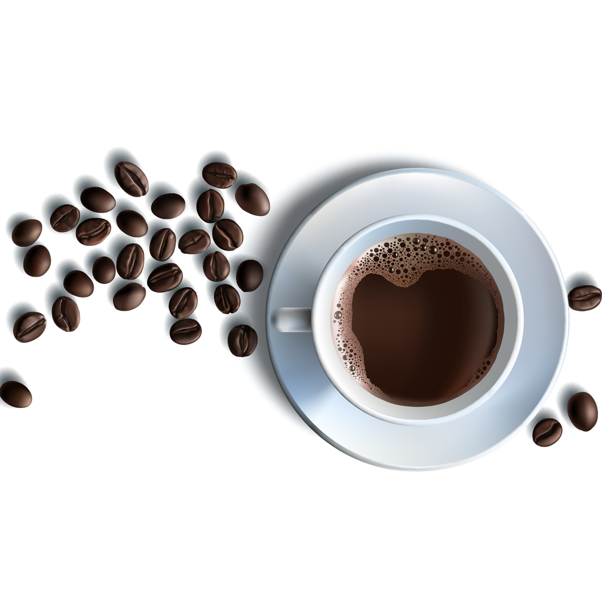

Brewing Happiness In Every Cup
The Art Of Coffee


Welcome to Cappuccino, where every cup is brewed with passion and care. Nestled in the heart of Roma, we are more than just a coffee shop—we're a community hub where friends meet, ideas flow, and every sip brings comfort. At Cappuccino, we believe in the art of coffee. Our beans are carefully sourced from sustainable farms around the world, ensuring that every blend is as unique as the story behind it. Whether you're here for a quick espresso, a leisurely latte, or a new seasonal specialty, we take pride in crafting each drink to perfection.
Thank you for choosing Cappuccino. We’re thrilled to share our love for coffee with you and look forward to making every visit a memorable experience. This should give a welcoming and authentic feel to your coffee shop's website! But our passion doesn’t stop at coffee. We offer a cozy, inviting space where you can relax, work, or connect with others. Our team is dedicated to creating a warm and welcoming environment for everyone who walks through our doors.